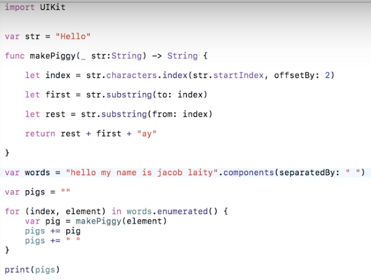

Pig Latin Translator
Here is a YouTube video of the program in action!
You can see me type in English (around the middle of the screen) and then translated Pig Latin is at the bottom!
Screenshot of the code
I am now going to walk you through the code step by step. I will start at func makePiggy, on the third line!
makePiggy is the main function for turing English into PigLatin. "let first" is the first letter of the word. "let rest" is the rest of the word. The last line of the function then says to add together "rest" + "first" + "ay". For example, if you had cheese then you would get "heesecay"
"Var words" is the English text that the user enters, the program then seperates them all by determing where the spaces are which is what the (seperatedBy: " ") is for!
Then the program then creates an empty string (pigs) that will eventually hold the translated text.
Then, basically, the program says that however many words there are in the English text is the amount of times that the makePiggy function will have to be called, it then assings the translate text (pig) to the display text (pigs) which then adds a space on the end off so there is some room for the next word.
This project took me about 3 hours - I made it at the weekly Jersey Coder's Club, where each session is 1.5 hours, and spent two weeks on it. This was one of my first expiriences with programming Swift and was very helpful in getting a grasp of the Syntax
So that I was able to feauture a video of the Pig Latin translator in this portfolio, I had to update the code from Swift 2, the language I originaly wrote it in, to Swift 3. Some minor errors in my explanation of the code might have occured due to me getting mixed up between Swift version!